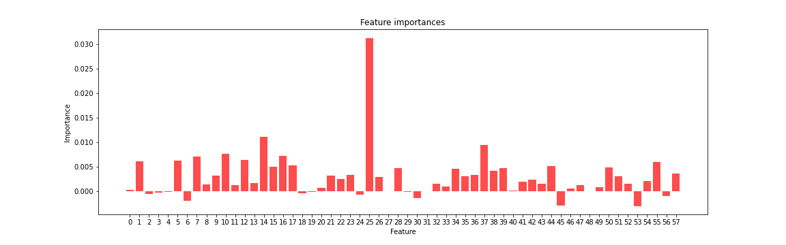
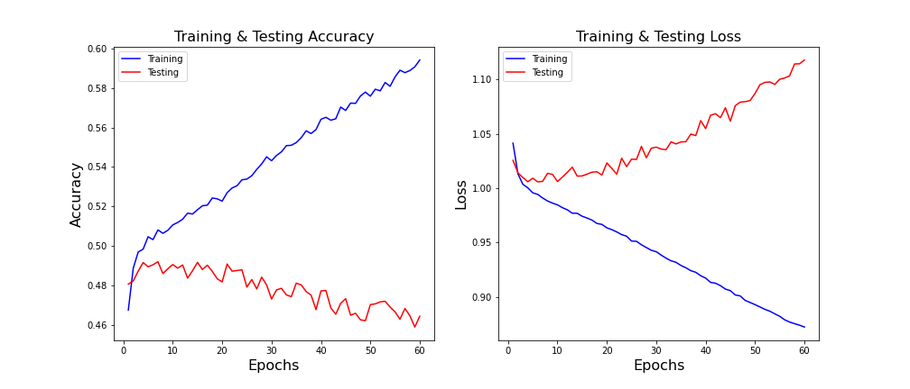

Neural Networks
A neural nework simulates a lot of densly interconnected brain cells inside a computer in order for it to learn things and make decisions in a humanlike way. A typical neural network has many different artificial neurons, called units, arranged in a series of layers. Input units recieve information from the outside world. Output units signal how it responds to the information it has learned. Between these two layers lie one or more layers that are hidden units. Most neural networks are fully connected. This means each hidden unit and each output unit is connected to every unit in the layers on either side. Neural networks are trained by feeding a bunch of inputs into it and comparing the resulting outputs to a known label.

The initial neural network model started with 58 features and one target with three categories. The data were then split into training and testing data and the x values were scaled. The target values were one-hot-encoded. The hidden layer in this case had 100 units and activation 'relu'. The model was then fit with 16,303 total parameters and the same number of trainable parameters. The resulting model had loss of 1.71 and an accuracy score of 43.4%. The addition of another hidden layer resulted in a lower accuracy score. The next step was to figure out the importance of each feature. The following graph shows each feature's importance.
The next model I tried was a model with the least important features removed. I removed any feature with a score below zero which resulted in a model with 40 features and its accuracy was 43.49%. The next model I tried was a model with the top ten features. This model had a slight increase in accuracy. From there, I both added some freatures and removed some features until I found the model with the greatest accuracy. This model had six features and its accuracy score was 45.3%. Next, I added an extra hidden layers to all three models and in each case the accuracy decreased. Next, I changed the activation function to 'elu', or 'exponential linear unit', and all three models achieved their best scores. The model with 40 features had the highest accuracy with 47.3%
The above graphs are accuracy and loss curves, or learning curves, for the model with 40 features. Learning curves are widely used to evaluate neural networks. The training loss is decreasing and continuing to decrease at the end of the plot. This is a characteristic of an underfit model. An underfit model is a model that cannot learn the training dataset. The noisy values of high loss may also indicate the model had trouble learning the training dataset. For more on learning curves, click here.
Image credit: https://towardsdatascience.com/applied-deep-learning-part-1-artificial-neural-networks-d7834f67a4f6